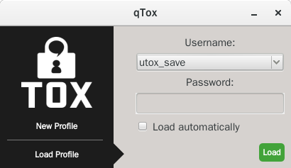
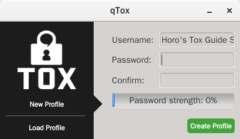
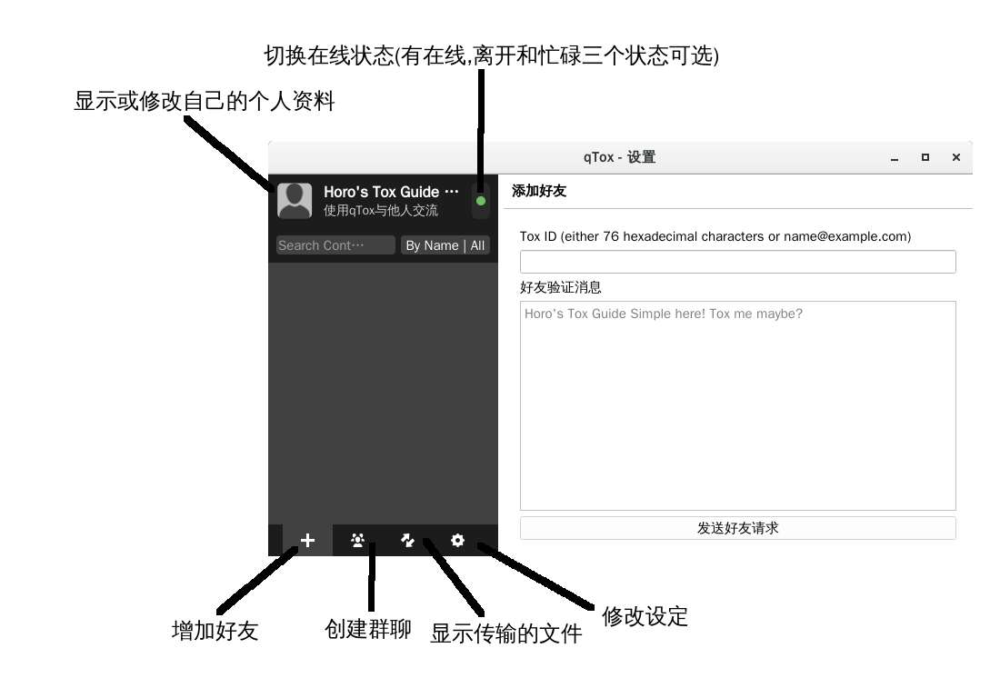
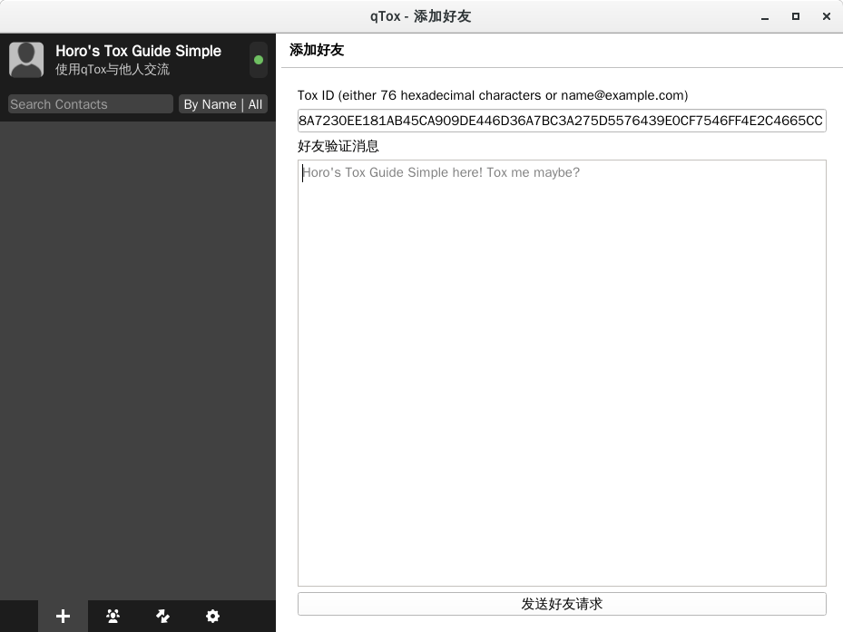
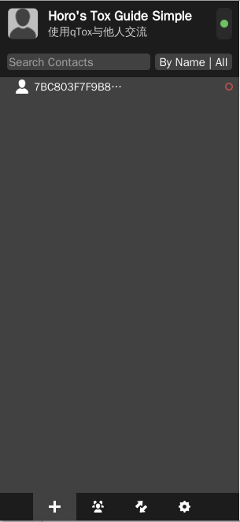
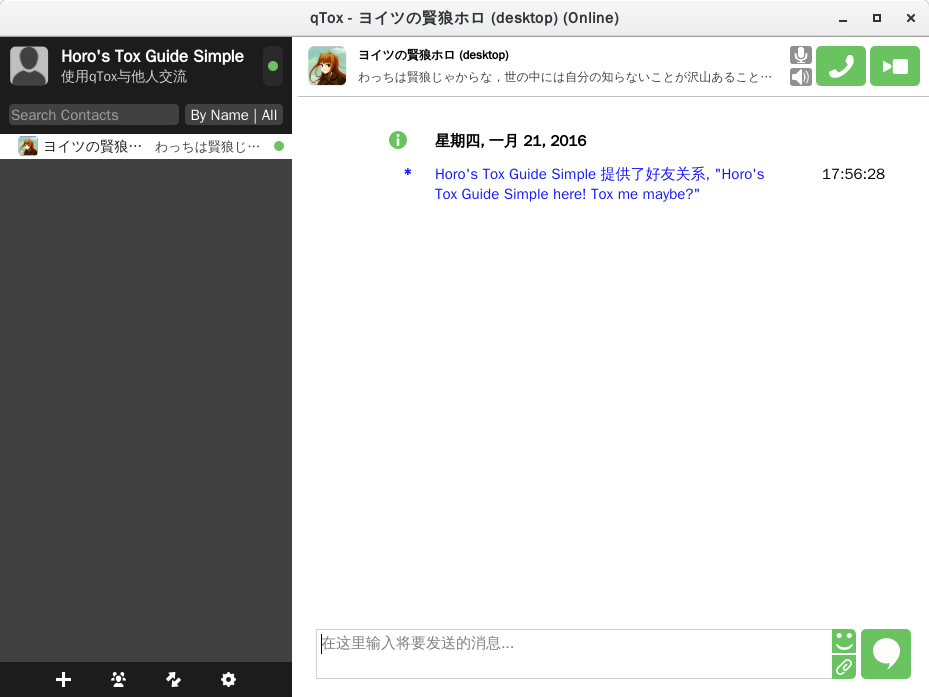
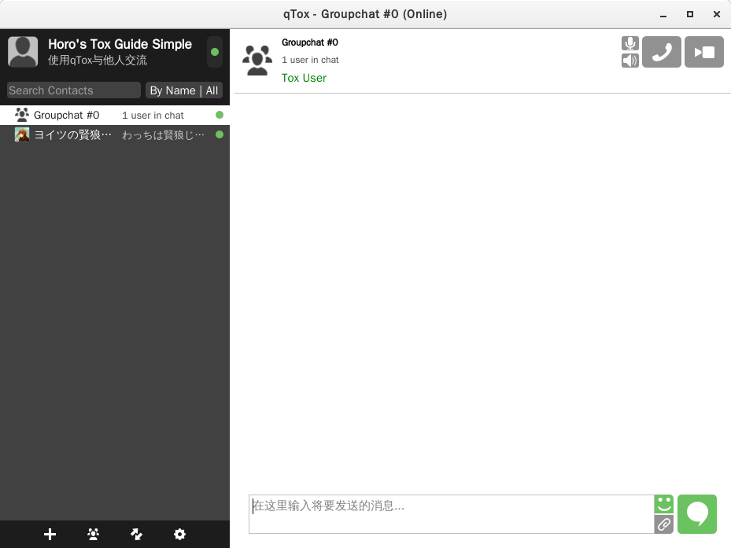

目录
Tox新手入门
2016年01月21日 (Thu) ホロ Tech 显示源代码notes software
Tox,一种新型的聊天协议.如果汝关注安全和隐私,不妨来看看呗~
再说一遍Tox是啥?
Tox是一种新型的通讯协议,它的目标是——提供一个无法监控的 Skype 替代品——彻底的加密，没有后门，无需中间服务器。
由于Tox就是一个协议框架,不同的开发者开发了不同的软件呗~
Tox 官方维护的wiki上可以找到不同平台可用的客户端列表呐
在下面的例子中咱会先拿 qtox 来示范一下,汝可以从上面的列表中选择一个适合自己的客户端呗~
首先按照上游的指南装好客户端呗~
新建一个Tox个人资料
运行qtox,会弹出这样的窗口:
因为咱已经有一个Tox Profile所以是这样啦,汝直接按"New Profile"就好:
在Username那挑个用户名,Password那输入个密码呗~
如果用SSH远程访问做类比的话,汝的Profile就是私钥,密码就是私钥的保护口令呗~
汝输入的密码非常重要!
1.挑一个好的密码,如果不怀好意的骇客同时得到了汝的密码和profile,就可以冒充汝发送消息了诶.
2,记住汝的密码!虽然安全性很重要,但是一旦汝忘了密码,基本上就无法恢复了呗~
确认完毕之后就会进入到qtox的主画面了呗~(旁边一圈是咱加上的注释,原谅咱不怎么会用GIMP......)
添加好友
要添加好友的话,先让汝的好友把Ta的Tox ID用其他的手段让汝知道呗~
E1F1C7DEA73D8126A1DEE9EAE5B45E21FB17E75F2319B7823A346B8C427EB272C80A89B69B4E
—Tox ID 是像这样的十六进制数呗~
然后到添加好友的界面把Tox ID输入进去.必要的话,附上一段消息让Ta知道汝是谁呗~
一开始时汝的好友列表只会显示对方的Tox ID呐,像这样:
当Ta同意汝的好友请求以后,汝的好友列表上就会显示Ta的Name和Status呗~
然后像平常一样聊天呗~
要想让其他人和汝成为好友的话,把汝自己的Tox ID告诉Ta,让Ta像这样添加汝为好友呗~
发起群聊
Tox也是可以发起群聊的哟~首先创建一个(qtox里点击下方"创建群聊"按钮就可以了诶~)
汝也可以邀请好友加入群聊呗~(qtox中右键点击某个好友-邀请加入群聊-汝的群聊名称呗~)
只不过万一汝退出了tox,下次登录时是不会加入上次加入的群聊的,汝只好让好友再邀请汝一次呗~
 除非另有声明，约伊兹的萌狼乡手札的文字内容在
除非另有声明，约伊兹的萌狼乡手札的文字内容在